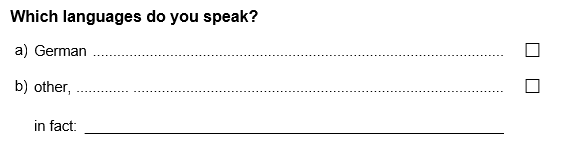
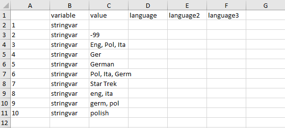
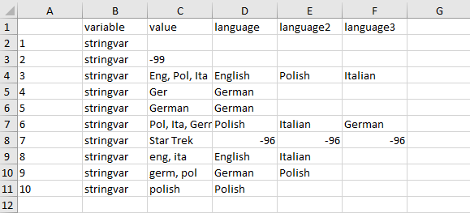

Recoding a multiple choice item with a text field
Benjamin Becker, Johanna Busse
2023-10-17
Source:vignettes/recoding_multipleChoice.rmd
recoding_multipleChoice.rmdIf a multiple choice item is administered, sometimes not all possible answers can be covered by predefined response options. In such cases, often an additional response option (e.g. “other”) is given accompanied by an open text field. An example of such a multiple choice item is asking for the languages a person is able to speak:

In the resulting data set, such an item will often be stored as multiple separate variables: dichotomous and numeric (‘dummy’) variables for each multiple choice option (with variable labels describing the response option) and an additional character variable (containing the answers in the text field). For data analysis it is usually necessary to integrate the information from the character variable into the dummy variables. Often the following steps are required:
- recode the character variable manually (e.g. to eliminate spelling mistakes) and separate the answers into multiple variables
- transform open answers which refer to existing response options (e.g. if a test taker overlooked a response option)
- transform the remaining open answers to numeric, labeled variables
To illustrate the steps we have implemented a small SPSS
example data set in this package. The data set can be loaded using the
import_spss() function. For further information on
importing SPSS data see import_spss: Importing data from
‘SPSS’. Note that the data set is a minimal working example,
containing only the required variables for this illustration.
library(eatGADS)
data_path <- system.file("extdata", "multipleChoice.sav", package = "eatGADS")
gads <- import_spss(data_path)
# Show example data set
gads
#> $dat
#> ID mcvar1 mcother stringvar
#> 1 1 1 -94 German
#> 2 2 -94 0 Ger
#> 3 3 0 1 Ger
#> 4 4 1 -94
#> 5 5 -94 0 Eng, Pol, Ita
#> 6 6 0 1 Pol, Ita, Germ
#> 7 7 1 -94 eng, ita
#> 8 8 -94 0 germ, pol
#> 9 9 0 1 polish
#> 10 10 1 -94 eng, ita
#> 11 11 -94 0 -99
#> 12 12 0 1 Star Trek
#>
#> $labels
#> varName varLabel format display_width labeled value
#> 1 ID <NA> F8.0 NA no NA
#> 2 mcvar1 Language: German F8.2 NA yes -94
#> 3 mcvar1 Language: German F8.2 NA yes 0
#> 4 mcvar1 Language: German F8.2 NA yes 1
#> 5 mcother Language: other F8.2 NA yes -94
#> 6 mcother Language: other F8.2 NA yes 0
#> 7 mcother Language: other F8.2 NA yes 1
#> 8 stringvar Language: text A14 NA yes -99
#> valLabel missings
#> 1 <NA> <NA>
#> 2 missing miss
#> 3 no valid
#> 4 yes valid
#> 5 missing miss
#> 6 no valid
#> 7 yes valid
#> 8 missing by design valid
#>
#> attr(,"class")
#> [1] "GADSdat" "list"The variable names of the data set above are connected to the multiple choice question as indicated:

Preparing the data set
As illustrated, data can be loaded into R in the
GADSdat format via the functions
import_spss(),import_DF() or
import_raw(). Depending on the original format, omitted
responses to open text fields might be stored as empty strings instead
of NAs. In these cases, the recode2NA()
function should be used to recode these values to NA. Per
default, matching strings across all variables in the data set are
recoded. Specific variables selection can be specified using the
recodeVars argument. Note that the function only performs
recodings to exact matches of a single, specific string (in our example
"").
gads <- recode2NA(gads, value = "")
#> Recodes in variable ID: 0
#> Recodes in variable mcvar1: 0
#> Recodes in variable mcother: 0
#> Recodes in variable stringvar: 1Creating and editing a lookup table
With createLookup(), you can create a lookup table which
allows recoding one or multiple variables.
You can choose which string variables in a GADS object you
would like to recode by using the recodeVars argument. The
resulting look up table is a long format data.frame with
rows being variable x value pairings. In case you want to sort the
output to make recoding easier, the argument sort_by can be
used. Extra columns can be added to the look up table by the argument
addCols (but can also be added later manually e.g. in
Excel). As test takers can insert multiple languages in the text field,
you have to add multiple recode columns to the look up table. The
respective column names are irrelevant and just for convenience
purpose.
lookup <- createLookup(GADSdat = gads, recodeVars = "stringvar", sort_by = 'value',
addCols = c("language", "language2", "language3"))
lookup
#> variable value language language2 language3
#> 1 stringvar <NA> NA NA NA
#> 2 stringvar -99 NA NA NA
#> 3 stringvar Eng, Pol, Ita NA NA NA
#> 4 stringvar Ger NA NA NA
#> 5 stringvar German NA NA NA
#> 6 stringvar Pol, Ita, Germ NA NA NA
#> 7 stringvar Star Trek NA NA NA
#> 8 stringvar eng, ita NA NA NA
#> 9 stringvar germ, pol NA NA NA
#> 10 stringvar polish NA NA NANow you have to add the desired values for recoding. You should use
(a) unique parts of the existing variable labels of the corresponding
dummy variables (see the next section for explanation) and (b)
consistent new values that can serve as variable labels later. Spelling
mistakes within the recoding will result in additional columns in the
final data set! If there are less values than columns you can leave the
remaining columns NA.
To fill in the columns you could use R directly to
modify the columns. Alternatively, we recommend using
eatAnalysis::write_xlsx() to create an excel file in which
you can fill in the values.
# write look up table to Excel
eatAnalysis::write_xlsx(lookup, "lookup_forcedChoice.xlsx")
After filling out the excel sheet the look up table might look like this:

The excel file can be read back into R via
readxl::read_xlsx(). If you want to create specific missing
codes, you have to insert the desired (numerical!) missing codes into
all columns (e.g. -96 in the look up table below). The
corresponding value labels will be assigned in a later step.
# write look up table to Excel
eatAnalysis::write_xlsx(lookup, "lookup_multipleChoice.xlsx")
### perform recodes in Excel sheet!
# read look up table back to R
lookup <- readxl::read_xlsx("lookup_multipleChoice.xlsx")
lookup#> variable value language language2 language3
#> 1 stringvar <NA> <NA> <NA> <NA>
#> 2 stringvar -99 <NA> <NA> <NA>
#> 3 stringvar Eng, Pol, Ita English Polish Italian
#> 4 stringvar Ger German <NA> <NA>
#> 5 stringvar German German <NA> <NA>
#> 6 stringvar Pol, Ita, Germ Polish Italian German
#> 7 stringvar Star Trek -96 -96 -96
#> 8 stringvar eng, ita English Italian <NA>
#> 9 stringvar germ, pol German Polish <NA>
#> 10 stringvar polish Polish <NA> <NA>Apply look up to GADSdat
You perform the actual data recoding using the
applyLookup_expandVar() function. It applies the recodes
defined in the look up table, thereby creating as many character
variables as there are additional columns in the look up table. Variable
names are generated automatically.
gads_string <- applyLookup_expandVar(GADSdat = gads, lookup = lookup)
#> Warning in check_lookup(lookup, GADSdat): Not all values have a recode value
#> assigned (missings in value_new).
#> No rows removed from meta data.
#> Adding meta data for the following variables: stringvar_1
#> No rows removed from meta data.
#> Adding meta data for the following variables: stringvar_2
#> No rows removed from meta data.
#> Adding meta data for the following variables: stringvar_3
gads_string$dat
#> ID mcvar1 mcother stringvar stringvar_1 stringvar_2 stringvar_3
#> 1 1 1 -94 German German <NA> <NA>
#> 2 2 -94 0 Ger German <NA> <NA>
#> 3 3 0 1 Ger German <NA> <NA>
#> 4 4 1 -94 <NA> <NA> <NA> <NA>
#> 5 5 -94 0 Eng, Pol, Ita English Polish Italian
#> 6 6 0 1 Pol, Ita, Germ Polish Italian German
#> 7 7 1 -94 eng, ita English Italian <NA>
#> 8 8 -94 0 germ, pol German Polish <NA>
#> 9 9 0 1 polish Polish <NA> <NA>
#> 10 10 1 -94 eng, ita English Italian <NA>
#> 11 11 -94 0 -99 <NA> <NA> <NA>
#> 12 12 0 1 Star Trek -96 -96 -96In some cases you might have recoded some of the values to specific
missing codes. These missing codes have to be now specified by hand as
value labels that should be treated as missings. The function
changeValLabels() is used to give specific value labels and
the function changeMissings() attaches missing codes. The
loop below performs the appropriate labeling and missing coding in a
loop for all three new string variables.
for(nam in paste0("stringvar_", 1:3)) {
gads_string <- changeValLabels(gads_string, varName = nam,
value = -96, valLabel = "Missing: Not codeable")
gads_string <- changeMissings(gads_string, varName = nam,
value = -96, missings = "miss")
}
gads_string$labels
#> varName varLabel format display_width labeled value
#> 1 ID <NA> F8.0 NA no NA
#> 2 mcvar1 Language: German F8.2 NA yes -94
#> 3 mcvar1 Language: German F8.2 NA yes 0
#> 4 mcvar1 Language: German F8.2 NA yes 1
#> 5 mcother Language: other F8.2 NA yes -94
#> 6 mcother Language: other F8.2 NA yes 0
#> 7 mcother Language: other F8.2 NA yes 1
#> 8 stringvar Language: text A14 NA yes -99
#> 9 stringvar_1 Language: text A14 NA yes -99
#> 10 stringvar_1 Language: text A14 NA yes -96
#> 11 stringvar_2 Language: text A14 NA yes -99
#> 12 stringvar_2 Language: text A14 NA yes -96
#> 13 stringvar_3 Language: text A14 NA yes -99
#> 14 stringvar_3 Language: text A14 NA yes -96
#> valLabel missings
#> 1 <NA> <NA>
#> 2 missing miss
#> 3 no valid
#> 4 yes valid
#> 5 missing miss
#> 6 no valid
#> 7 yes valid
#> 8 missing by design valid
#> 9 missing by design valid
#> 10 Missing: Not codeable miss
#> 11 missing by design valid
#> 12 Missing: Not codeable miss
#> 13 missing by design valid
#> 14 Missing: Not codeable missMatch values to variable labels
When integrating character variables into multiple dummy variables,
there has to be a clear correspondence between values in the character
variable and dummy variables. eatGADS requires this
information as a named character vector with the dummy variable names as
values and values of the text variable as names. Such a vector can be
automatically generated by the matchValues_varLabels()
function. The function takes a character vector (values) as
input and matches all values in this vector to the variable labels of
the dummy variables (mc_vars). We provide the content of
the character variables as input for the values argument as
these are all possible new values.
In case that not every already existing variable label is part of the
lookup table you can use the label_by_hand argument. This
is always the case for the variable representing the other
response option but might be necessary for other response options as
well. Alternatively, these values could be added to the
value_string as well, to enable automatic matching.
value_string <- c(lookup$language, lookup$language2, lookup$language3)
named_char_vec <- matchValues_varLabels(GADSdat = gads_string,
mc_vars = c("mcvar1", "mcother"),
values = value_string,
label_by_hand = c("other"="mcother"))
named_char_vec
#> German other
#> "mcvar1" "mcother"Integrate character and numeric variables
By using the expanded GADS and the named character
vector you can collapse the information of the strings with the already
existing numeric variables. The following coding of the binary numeric
variables is required: 1 = true and 0 = false
(for recoding see recodeGADS()). The names of the text
variables are specified under text_vars.
If there is an entry in the text variables that matches one of the
binary numeric variables, this binary numeric variable will be set to
1. The variable which indicates entries in the text
variable (mc_var_4text) is recoded accordingly. If for a
row all entries in the text variable can be recoded into the binary
numeric variables, the invalid_miss_code is inserted into
the text variables and mc_var_4text is changed to
0. If there are valid entries beside the binary numeric
variables mc_var_4text is set to 1. If there
were no valid entries in text_vars to begin with,
mc_var_4text is left as is. All empty entries in the
text_vars are assigned missing codes
(notext_miss_code).
gads_string2 <- collapseMultiMC_Text(GADSdat = gads_string, mc_vars = named_char_vec,
text_vars = c("stringvar_1", "stringvar_2", "stringvar_3"),
mc_var_4text = "mcother", var_suffix = "_r",
label_suffix = "(recoded)",
invalid_miss_code = -98,
invalid_miss_label = "Missing: By intention",
notext_miss_code = -99,
notext_miss_label = "Missing: By intention")
#> No rows removed from meta data.
#> Adding meta data for the following variables: mcvar1_r, mcother_r, stringvar_1_r, stringvar_2_r, stringvar_3_r
gads_string2$dat
#> ID mcvar1 mcother stringvar stringvar_1 stringvar_2 stringvar_3
#> 1 1 1 -94 German German <NA> <NA>
#> 2 2 -94 0 Ger German <NA> <NA>
#> 3 3 0 1 Ger German <NA> <NA>
#> 4 4 1 -94 <NA> <NA> <NA> <NA>
#> 5 5 -94 0 Eng, Pol, Ita English Polish Italian
#> 6 6 0 1 Pol, Ita, Germ Polish Italian German
#> 7 7 1 -94 eng, ita English Italian <NA>
#> 8 8 -94 0 germ, pol German Polish <NA>
#> 9 9 0 1 polish Polish <NA> <NA>
#> 10 10 1 -94 eng, ita English Italian <NA>
#> 11 11 -94 0 -99 <NA> <NA> <NA>
#> 12 12 0 1 Star Trek -96 -96 -96
#> mcvar1_r mcother_r stringvar_1_r stringvar_2_r stringvar_3_r
#> 1 1 0 -98 -98 -98
#> 2 1 0 -98 -98 -98
#> 3 1 0 -98 -98 -98
#> 4 1 -94 -99 -99 -99
#> 5 -94 1 English Polish Italian
#> 6 1 1 Polish Italian -99
#> 7 1 1 English Italian -99
#> 8 1 1 Polish -99 -99
#> 9 0 1 Polish -99 -99
#> 10 1 1 English Italian -99
#> 11 -94 0 -99 -99 -99
#> 12 0 1 -96 -96 -96Trim down variables
Sometimes the number of additional entries should be limited (as
theoretically there can be infinite additional entries). This means that
the number of character variables is ‘trimmed’.
remove2NAchar() performs this trimming. Via
max_num the maximum number of text variables is defined and
all text variables above this number are removed from the data set. If a
row in the data set contains valid entries in on of the removed
variables, a specific missing code (na_value) is inserted
into this row on all remaining text variables.
gads_string3 <- remove2NAchar(GADSdat = gads_string2,
vars = c("stringvar_1_r", "stringvar_2_r", "stringvar_3_r"),
max_num = 2, na_value = -97,
na_label = "missing: excessive answers")
#> Removing the following rows from meta data: stringvar_3_r
#> No rows added to meta data.
gads_string3$dat
#> ID mcvar1 mcother stringvar stringvar_1 stringvar_2 stringvar_3
#> 1 1 1 -94 German German <NA> <NA>
#> 2 2 -94 0 Ger German <NA> <NA>
#> 3 3 0 1 Ger German <NA> <NA>
#> 4 4 1 -94 <NA> <NA> <NA> <NA>
#> 5 5 -94 0 Eng, Pol, Ita English Polish Italian
#> 6 6 0 1 Pol, Ita, Germ Polish Italian German
#> 7 7 1 -94 eng, ita English Italian <NA>
#> 8 8 -94 0 germ, pol German Polish <NA>
#> 9 9 0 1 polish Polish <NA> <NA>
#> 10 10 1 -94 eng, ita English Italian <NA>
#> 11 11 -94 0 -99 <NA> <NA> <NA>
#> 12 12 0 1 Star Trek -96 -96 -96
#> mcvar1_r mcother_r stringvar_1_r stringvar_2_r
#> 1 1 0 -98 -98
#> 2 1 0 -98 -98
#> 3 1 0 -98 -98
#> 4 1 -94 -99 -99
#> 5 -94 1 -97 -97
#> 6 1 1 Polish Italian
#> 7 1 1 English Italian
#> 8 1 1 Polish -99
#> 9 0 1 Polish -99
#> 10 1 1 English Italian
#> 11 -94 0 -99 -99
#> 12 0 1 -96 -96Multiple character variables to labeled integers
After using collapseMultiMC_Text() (and
remove2NAchar()), only new, additional values are left in
the character variables. multiChar2fac() transforms these
remaining text variables to numeric, labeled variables. All resulting
labeled variables share the exact same value labels, which are sorted
alphabetically.
gads_numeric <- multiChar2fac(GADSdat = gads_string3, vars = c("stringvar_1_r", "stringvar_2_r"),
var_suffix = "_r", label_suffix = "(recoded)")
gads_numeric$dat
#> ID mcvar1 mcother stringvar stringvar_1 stringvar_2 stringvar_3
#> 1 1 1 -94 German German <NA> <NA>
#> 2 2 -94 0 Ger German <NA> <NA>
#> 3 3 0 1 Ger German <NA> <NA>
#> 4 4 1 -94 <NA> <NA> <NA> <NA>
#> 5 5 -94 0 Eng, Pol, Ita English Polish Italian
#> 6 6 0 1 Pol, Ita, Germ Polish Italian German
#> 7 7 1 -94 eng, ita English Italian <NA>
#> 8 8 -94 0 germ, pol German Polish <NA>
#> 9 9 0 1 polish Polish <NA> <NA>
#> 10 10 1 -94 eng, ita English Italian <NA>
#> 11 11 -94 0 -99 <NA> <NA> <NA>
#> 12 12 0 1 Star Trek -96 -96 -96
#> mcvar1_r mcother_r stringvar_1_r stringvar_2_r stringvar_1_r_r
#> 1 1 0 -98 -98 -98
#> 2 1 0 -98 -98 -98
#> 3 1 0 -98 -98 -98
#> 4 1 -94 -99 -99 -99
#> 5 -94 1 -97 -97 -97
#> 6 1 1 Polish Italian 3
#> 7 1 1 English Italian 1
#> 8 1 1 Polish -99 3
#> 9 0 1 Polish -99 3
#> 10 1 1 English Italian 1
#> 11 -94 0 -99 -99 -99
#> 12 0 1 -96 -96 -96
#> stringvar_2_r_r
#> 1 -98
#> 2 -98
#> 3 -98
#> 4 -99
#> 5 -97
#> 6 2
#> 7 2
#> 8 -99
#> 9 -99
#> 10 2
#> 11 -99
#> 12 -96
gads_final <- gads_numeric
extractMeta(gads_final)[, c("varName", "value", "valLabel", "missings")]
#> varName value valLabel missings
#> 1 ID NA <NA> <NA>
#> 2 mcvar1 -94 missing miss
#> 3 mcvar1 0 no valid
#> 4 mcvar1 1 yes valid
#> 5 mcother -94 missing miss
#> 6 mcother 0 no valid
#> 7 mcother 1 yes valid
#> 8 stringvar -99 missing by design valid
#> 9 stringvar_1 -99 missing by design valid
#> 10 stringvar_1 -96 Missing: Not codeable miss
#> 11 stringvar_2 -99 missing by design valid
#> 12 stringvar_2 -96 Missing: Not codeable miss
#> 13 stringvar_3 -99 missing by design valid
#> 14 stringvar_3 -96 Missing: Not codeable miss
#> 15 mcvar1_r -94 missing miss
#> 16 mcvar1_r 0 no valid
#> 17 mcvar1_r 1 yes valid
#> 18 mcother_r -94 missing miss
#> 19 mcother_r 0 no valid
#> 20 mcother_r 1 yes valid
#> 21 stringvar_1_r -99 Missing: By intention miss
#> 22 stringvar_1_r -98 Missing: By intention miss
#> 23 stringvar_1_r -97 missing: excessive answers miss
#> 24 stringvar_1_r -96 Missing: Not codeable miss
#> 25 stringvar_2_r -99 Missing: By intention miss
#> 26 stringvar_2_r -98 Missing: By intention miss
#> 27 stringvar_2_r -97 missing: excessive answers miss
#> 28 stringvar_2_r -96 Missing: Not codeable miss
#> 29 stringvar_1_r_r -99 Missing: By intention miss
#> 30 stringvar_1_r_r -98 Missing: By intention miss
#> 31 stringvar_1_r_r -97 missing: excessive answers miss
#> 32 stringvar_1_r_r -96 Missing: Not codeable miss
#> 33 stringvar_1_r_r 1 English valid
#> 34 stringvar_1_r_r 2 Italian valid
#> 35 stringvar_1_r_r 3 Polish valid
#> 36 stringvar_2_r_r -99 Missing: By intention miss
#> 37 stringvar_2_r_r -98 Missing: By intention miss
#> 38 stringvar_2_r_r -97 missing: excessive answers miss
#> 39 stringvar_2_r_r -96 Missing: Not codeable miss
#> 40 stringvar_2_r_r 1 English valid
#> 41 stringvar_2_r_r 2 Italian valid
#> 42 stringvar_2_r_r 3 Polish validClean data set
In a last step you can remove unnecessary variables from the
GADS object by using removeVars().
gads_final2 <- removeVars(gads_final, vars = c("stringvar_1", "stringvar_2", "stringvar_3",
"stringvar_1_r", "stringvar_2_r"))
#> Removing the following rows from meta data: stringvar_1, stringvar_2, stringvar_3, stringvar_1_r, stringvar_2_r
#> No rows added to meta data.